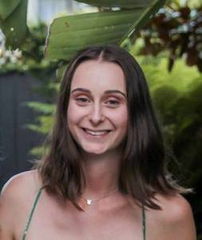
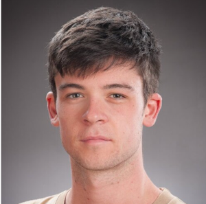

Tirta Susilo | Group Leader
Tirta Susilo | Group Leader
Tirta is senior lecturer in the School of Psychology at Victoria University of Wellington. He is also director of the Cognitive and Behavioural Neuroscience (CBNS) research program. Tirta did his PhD at the Australian National University and his postdoctoral training at Dartmouth College. Tirta’s research expertise is visual perception and neuroscience, with a special focus on face processing. [Homepage] [CV] [Google Scholar] [ORCID] [Email]
 Zoe Little | Research Assistant
Zoe completed her MSc project in the lab in 2021, looking at eye gaze processing in developmental prosopagnosia. She is now working on multiple projects involving gaze processing, perceptual decision making, and rapid eye movements. Zoe was previously a CBNS rotation student, a summer scholar, and a research volunteer. In her prior studies, Zoe used psychophysics to examine the spatiotemporal aspects of direct gaze perception, and frequency-based EEG to explore a potential biomarker of face recognition abilities. Zoe holds a BSc in psychology and geography, and an MSc in Cognitive and Behavioural Neuroscience.
Ella Macaskill | Research Assistant
Ella completed her MSc project in the lab in 2021, looking at early visual mechanisms in face processing and prosopagnosia. Ella has worked in the lab as a CBNS rotation student, a summer scholar, and a research volunteer. Ella’s prior projects looked at individual differences in eye movements to natural scenes and the robustness of face recognition to image stretching. Ella holds a BA in psychology and education, and an MSc in Cognitive and Behavioural Neuroscience.
 Lizzie Collyer | MSc Student
Lizzie Collyer | MSc Student
Lizzie is an MSc student interested what pareidolia faces can tell us about automatic face detection. Lizzie also worked in the lab as a CBNS rotation student and a summer scholar. In her prior studies, Lizzie has looked at visual imagery and rapid eye movements. Lizzie holds a BA in psychology and classics.
 Jaiden Cancian | MSc Student (clinical)
Jaiden Cancian | MSc Student (clinical)
Jaiden is an MSc student in the clinical program, interested in face detection in developmental prosopagnoisa. Jaiden was previously a Honours student, SCIE306 student, and a research volunteer. Jaiden's previous research has looked at unconscious face processing and laterality effects in face recognition. Jaiden holds a BSc in psychology and criminology.
 Liam Crowley | Honours Student
Liam is interested in pursuing research in visual perception and neuroscience. He is currently exploring potential experiments on holistic processing of faces. Liam has a BA majoring in psychology and philosophy.
- © Untitled
- Design: HTML5 UP